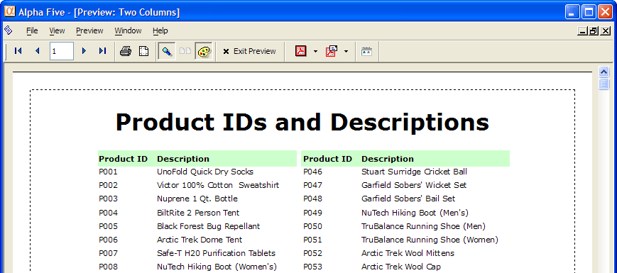
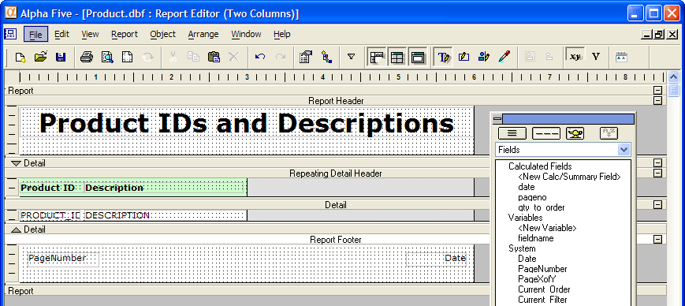
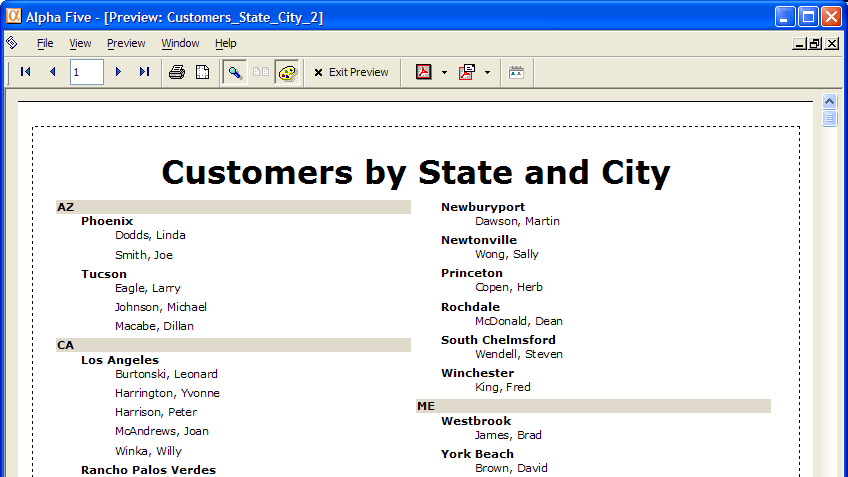
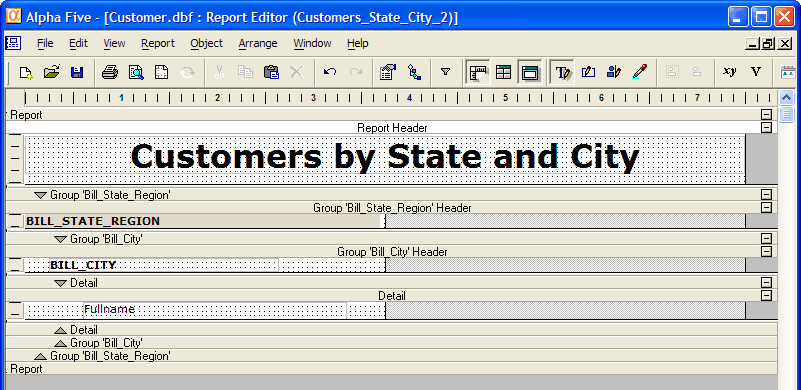
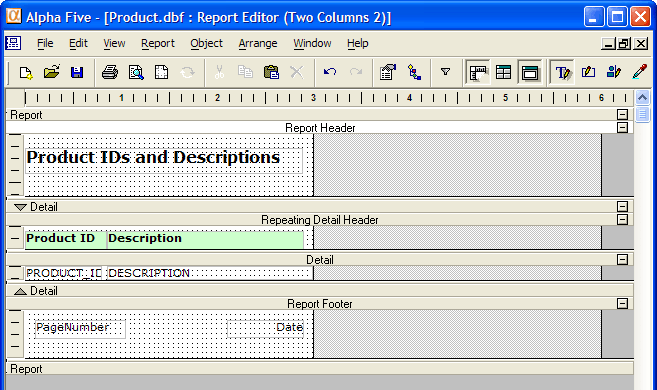
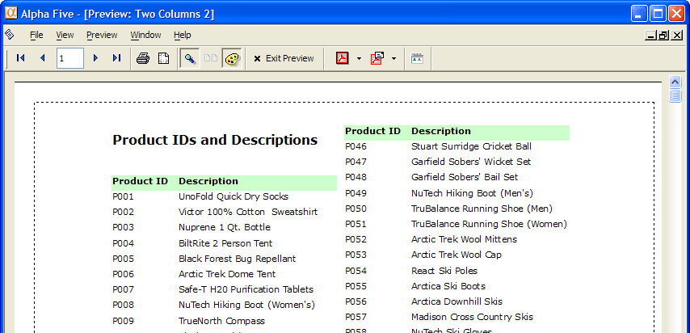
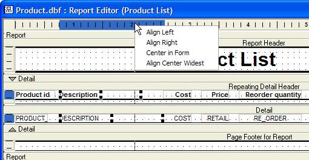

Dividing a Report into Columns
Alpha Anywhere lets you split the detail section, a group section, or the entire report into two or more columns. This lets you make better use of space on a page and to save paper. When you divide a section into columns, all edit regions within the section are divided into columns.
Important: Dividing a report into columns at the 'Report Level' can lead to problems with page numbering. Dividing a report into columns at the 'report level' is appropriate for simple reports, such as mailing labels. However more complex reports with group breaks should be divided into columns at the Group Level or Detail Level. In most cases, dividing reports into columns at the Detail Level will be the appropriate option.
This picture shows a report that has no grouping. The detail section has 2 columns.

Here is a view of the report above in the Report Editor. If you add a detail footer, it is also split (repeats) into two columns:

Dividing a section also divides every section contained within it. For example, if you have a report that groups customer records by state and city. Dividing the state group into columns automatically divides both the city group and the detail section:

To divide a section into columns, choose Report > Report Properties, Report > Detail Properties, or Report > Group Properties. When the Properties dialog box appears, click the Region tab. Set the number of columns in the Columns spin box. Check the Balance column height check box if you want to keep each column on the page at approximately the same height.
Note : To place a fill color in a region as illustrated with Bill_State_Region above, select the label, display its Properties dialog, display the Border tab, and set its Foreground color attribute.
Here are some things to keep in mind when creating columns:
When you divide a section into columns, continuation headers and footers that fall in the section are also divided, but the page headers and footers are not.
Detail headers and footers and repeating group headers and footers repeat at column breaks as well as page breaks.
The options you set for keeping sections and edit regions together on the same page, automatically apply to keeping sections and edit regions in the same column.
If you have already placed fields or other objects on the layout, Alpha Anywhere may not let you divide a section into columns if the objects take up too much page width. To correct this, move, resize, or delete the objects which may fall too far to the right.
Examples of Reports Divided Into Columns
You can set the number of columns for a grouping level. When you set columns for a grouping level, they also apply to the Detail Section and to any sub-groups that fall under the group for which the columns are set. For example, in a report that groups records by state and city, setting columns for the State group automatically divides the City group as well.
The following report shows customer records grouped by state and city; the City group is divided into two balanced columns:

You can also set the number of columns for the whole report. Globally setting the columns sub-divides every layout edit region in the report:

Previewing the above report produces the following.

Moving or Aligning Columns or Rows
You can move columns in a report. For example, a column in a report would include a field title in a group header, a field in the detail section, a sub-total in a group footer, and a grand total in the report footer. To move the position of this "column", you have to move all of these objects. By clicking on the horizontal ruler, Alpha Anywhere selects all of the objects in the column. You can then move these objects left or right. Similarly, you can move all of the objects in a line up or down by clicking on the vertical ruler. You can also align all objects in a column or a line by right-clicking in the ruler and selecting an alignment option.

See Also